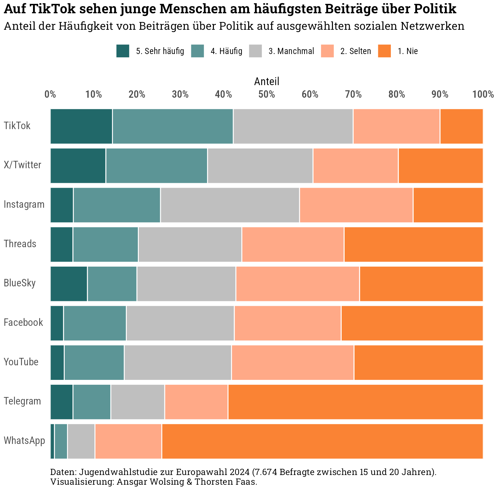
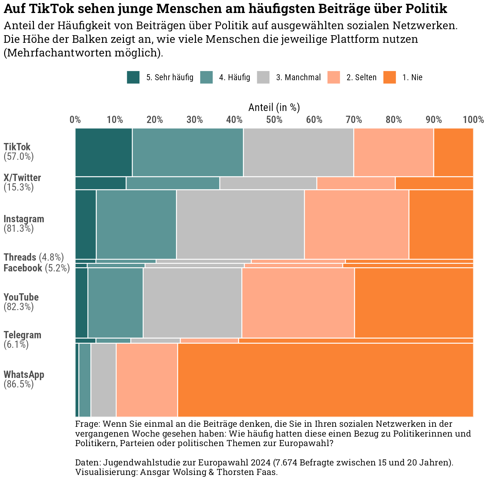

var_labels <- df |>select(starts_with("v33_")) |>get_variable_labels() |>unlist()freq_politikbezug <- df |>select(invcode, starts_with("v33_")) |>mutate(across(starts_with("v33_"), to_factor)) |>pivot_longer(cols =starts_with("v33_"), names_to ="platform", values_to ="freq_politikbezug") |>mutate(platform = var_labels[platform]) |>na.omit() |>count(platform, freq_politikbezug) |>mutate(freq_politikbezug2 =case_when(str_sub(freq_politikbezug, 1, 1) %in%c(1, 2) ~"Selten/nie",str_sub(freq_politikbezug, 1, 1) %in%c(4, 5) ~"Häufig/sehr häufig",str_sub(freq_politikbezug, 1, 1) ==3~"Manchmal" )) |>add_count(platform, freq_politikbezug2, wt = n, name ="n2") # Reihenfolge der Plattformenplatforms_freq_order <- freq_politikbezug |>add_count(platform, wt = n, name ="total_n") |>filter(freq_politikbezug2 =="Häufig/sehr häufig") |>mutate(share = n2 / total_n) |>arrange(share) |>distinct(platform) |>pull()n_responses_v32 <-sum(!is.na(df$v32_1))freq_politikbezug |>filter(platform !="Anderes Netzwerk") |>mutate(platform =factor(platform, levels = platforms_freq_order)) |>ggplot(aes(n, platform, fill = freq_politikbezug, group = freq_politikbezug)) +geom_col(position ="fill", color ="white") +scale_x_continuous(labels = scales::label_percent(), breaks =seq(0, 1, 0.1), position ="top",expand =expansion(mult =c(0, 0))) +scale_fill_manual(values =c( color_pal[4], colorspace::lighten(color_pal[4], 0.3), "grey75", colorspace::lighten(color_pal[2], 0.3), color_pal[2])) +guides(fill =guide_legend(reverse =TRUE)) +labs(title ="Auf TikTok sehen junge Menschen am häufigsten Beiträge über Politik",subtitle ="Anteil der Häufigkeit von Beiträgen über Politik auf ausgewählten sozialen Netzwerken",caption =sprintf("Daten: FES, Jugendwahlstudie zur Europawahl 2024 (%s Befragte zwischen 15 und 20 Jahren).<br>Visualisierung: Ansgar Wolsing & Thorsten Faas.", scales::number(n_responses_v32, big.mark =".")),x ="Anteil", y =NULL, fill =NULL ) +theme(legend.position ="top",axis.text =element_text(size =12),axis.text.y =element_markdown(hjust =0, lineheight =0.9),panel.grid =element_blank(),plot.margin =margin(t =4, r =16, b =4, l =4),plot.caption.position ="plot" )

Idee: Die Höhe der Balken der Plattform spiegelt die Anzahl der Nutzer wieder. Social Media mit hoher Nutzung haben entsprechend höhere Balken als Plattformen mit geringerer Nutzung. Bluesky geht in dieser Darstellung unter, der Balken zwischen Threads und Facebook ist nicht erkennbar.
Code
# Nutzungplatforms_mapping <-var_label(select(df, starts_with("v32_"))) |>as.character()names(platforms_mapping) <-colnames(select(df, starts_with("v32_")))df_platform_users <- df |>select(starts_with("v32_")) |>na.omit() |>pivot_longer(cols =everything(), names_to ="platform", values_to ="used") |>mutate(platform = platforms_mapping[platform],platform =ifelse(platform =="Tiktok", "TikTok", platform)) |>group_by(platform) |>summarize(n_users =sum(used ==1),share_users =mean(used ==1))df_marimekko <- freq_politikbezug |>filter(!platform %in%c("Anderes Netzwerk", "BlueSky")) |>mutate(platform =factor(platform, levels = platforms_freq_order)) |>arrange(platform) |># get the lower and upper boundary for the rectangle for each platformadd_count(platform, wt = n, name ="n_nutzer_platform") |>nest(data =-c(platform, n_nutzer_platform)) |>mutate(n_nutzer_platform_cumul =cumsum(n_nutzer_platform),n_nutzer_platform_cumul_lag =lag(n_nutzer_platform_cumul, 1, default =0),pos_label = n_nutzer_platform_cumul_lag + n_nutzer_platform /2 ) |>unnest(data) |># get the position for each segment within a bar (platform)group_by(platform) |>arrange(desc(freq_politikbezug), .by_group =TRUE) |>mutate(share_politikbezug = n /sum(n),share_politikbezug_cumul =cumsum(share_politikbezug),share_politikbezug_cumul_lag =lag(share_politikbezug_cumul, 1, default =0) ) |>ungroup() |>select(-c(n, n2, n_nutzer_platform, freq_politikbezug2))# Labels und Positionen der Labels auf der y-Achse bestimmenplatform_labels_marimekko <- df_marimekko |>distinct(platform, pos_label) |>inner_join(df_platform_users, by =join_by(platform)) |># Positionen FB und Threads manuell anpassenmutate(pos_label =case_when( platform =="Threads"~ pos_label +300, platform =="Facebook"~ pos_label -300,TRUE~ pos_label ),platform_label =sprintf("**%s**%s(%s)", platform, ifelse(platform %in%c("Threads", "Facebook"), " ", "<br>"), scales::percent(share_users, accuracy =0.1)) )n_responses_v32 <-sum(!is.na(df$v32_1))df_marimekko |>ggplot(aes(fill = freq_politikbezug)) +geom_rect(aes(xmin = share_politikbezug_cumul_lag, xmax = share_politikbezug_cumul,ymin = n_nutzer_platform_cumul_lag, ymax = n_nutzer_platform_cumul),color ="white" ) +scale_x_continuous(labels = scales::label_percent(), breaks =seq(0, 1, 0.1), position ="top",expand =expansion(mult =c(0, 0))) +scale_y_continuous(breaks = platform_labels_marimekko$pos_label,labels = platform_labels_marimekko$platform_label,expand =c(0, 0) ) +scale_fill_manual(values =c( color_pal[4], colorspace::lighten(color_pal[4], 0.3), "grey75", colorspace::lighten(color_pal[2], 0.3), color_pal[2])) +guides(fill =guide_legend(reverse =TRUE)) +labs(title ="Auf TikTok sehen junge Menschen am häufigsten Beiträge über Politik",subtitle ="Anteil der Häufigkeit von Beiträgen über Politik auf ausgewählten sozialen Netzwerken.<br>Die Höhe der Balken zeigt an, wie viele Menschen die jeweilige Plattform nutzen<br> (Mehrfachantworten möglich).",caption =sprintf("Frage: Wenn Sie einmal an die Beiträge denken, die Sie in Ihren sozialen Netzwerken in der vergangenen Woche<br>gesehen haben: Wie häufig hatten diese einen Bezug zu Politikerinnen und Politikern, Parteien oder politischen<br>Themen zur Europawahl? <br><br> Daten: FES, Jugendwahlstudie zur Europawahl 2024 (%s Befragte zwischen 15 und 20 Jahren). <br> Visualisierung: Ansgar Wolsing & Thorsten Faas.", scales::number(n_responses_v32, big.mark =".")),x ="Anteil (in %)", y =NULL, fill =NULL ) +theme(legend.position ="top",axis.text =element_text(size =12),axis.text.y =element_markdown(hjust =0, lineheight =0.9),panel.grid.major.x =element_line(),panel.grid.minor.x =element_line(),panel.grid.major.y =element_blank(),panel.grid.minor.y =element_blank(),plot.margin =margin(t =4, r =16, b =4, l =4),plot.caption.position ="plot" )

Am stärksten wahrgenommene Parteien
Diejenigen, die v34 mit Ja beantwortet haben, wurden zufällig v35 oder v36 zugewiesen.
TF: Man müsste also die „weiß nicht“-, „alle gleich“- u „ja-Anteile“ aus v34 nehmen u dann anhand von v35 den Ja-Anteil aufspalten (prozentual).
Code
# Kamen einzelne Parteien häufiger vor?df_antworten_v34 <- df |>mutate(v34 =case_when( v34 ==1~"Ja", v34 ==2~"Alle ungefähr gleich", v34 ==3~"Weiß nicht" )) |>count(v34) |>filter(!is.na(v34)) |>mutate(share = n /sum(n))n_responses_v34 <-sum(df_antworten_v34$n)v34_ja_anteil <- df_antworten_v34$share[df_antworten_v34$v34 =="Ja"]# Welche Partei kam am häufigsten vor (wenn v34 = Ja)df_antworten_v36 <- df |>mutate(v36_1 =to_factor(v36_1)) |>count(v36_1, sort =TRUE) |>filter(!is.na(v36_1)) |>mutate(share = n /sum(n),# Umrechnung, so dass der Anteil der Antworten aus v36 in Summe den Ja-Anteil von v34 ergibtshare_adjusted = share * v34_ja_anteil,v36_1 =if_else( v36_1 =="9. Andere Partei, und zwar:", "Sonstige", str_remove(v36_1, "^\\d+\\.\\s")))# Anteile aus beiden Fragen kombinieren, Ja aus v34 ersetzen mit Antworten aus v36df_social_media_parties <- df_antworten_v34 |>filter(v34 !="Ja") |>bind_rows(df_antworten_v36) |>transmute(antwort =ifelse(!is.na(v34), v34, v36_1),party_group =ifelse(!is.na(v34), "Nein", "Ja"), n,share_adjusted =ifelse(!is.na(v34), share, share_adjusted) )# Prüfen, ob die Summe der Anteil 1 ergibtsum(df_social_media_parties$share_adjusted)
[1] 1
Code
ragg::agg_png(here("02-social-media", "plots", "treemap-haeufigste-parteien.png"),width =1600, height =1600, units ="px", res =300) df_social_media_parties |>mutate(party_fill =ifelse(antwort %in%c("CDU", "CSU"), "CDU/CSU", antwort)) |>ggplot(aes(area = share_adjusted, subgroup = party_group, subgroup2 =paste(antwort, scales::percent(share_adjusted, accuracy =0.1, decimal.mark =","), sep ="\n"), fill = party_fill)) +geom_treemap(layout ="scol") +geom_treemap_subgroup_border(layout ="scol", col ="white", size =3) +geom_treemap_subgroup2_border(layout ="scol", col ="white", size =1.6) +geom_treemap_subgroup2_text(aes(col =ifelse(antwort %in%c("FDP"), "black", "white")),layout ="scol",family ="Roboto Condensed SemiBold", grow =FALSE, size =13, min.size =3, place ="topleft", padding.x =unit(0.01, "npc"), padding.y =unit(0.02, "npc") ) +scale_fill_manual(values =c("Weiß nicht"="grey58", "Alle ungefähr gleich"="grey55", party_pal)) +scale_color_identity() +guides(fill ="none") +labs(# title = "Die AfD wurde im Europawahlkampf in Social Media deutlich häufiger<br>als die dominierende Partei wahrgenommen als andere Parteien",title ="",subtitle ="",caption =sprintf("Daten: FES, Jugendwahlstudie zur Europawahl 2024 (n=%s Befragte zwischen<br>15 und 20 Jahren). Visualisierung: Ansgar Wolsing & Thorsten Faas.", scales::number(n_responses_v34, big.mark =".", decimal.mark =",")) ) grid.text("CSU 0,2%", x =0.52, y =0.944, gp =gpar(fontfamily ="Roboto Condensed SemiBold", col ="white", cex =0.5))dev.off()